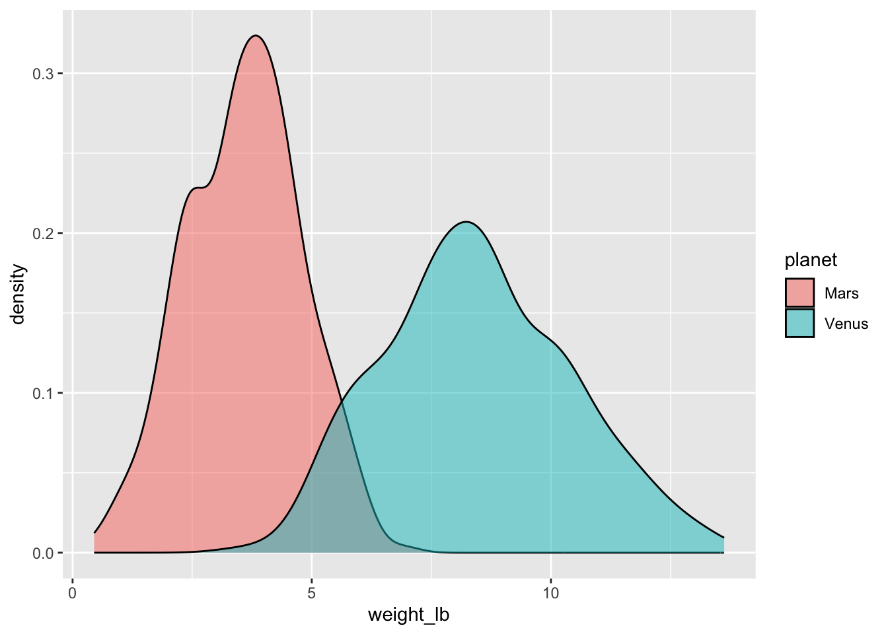
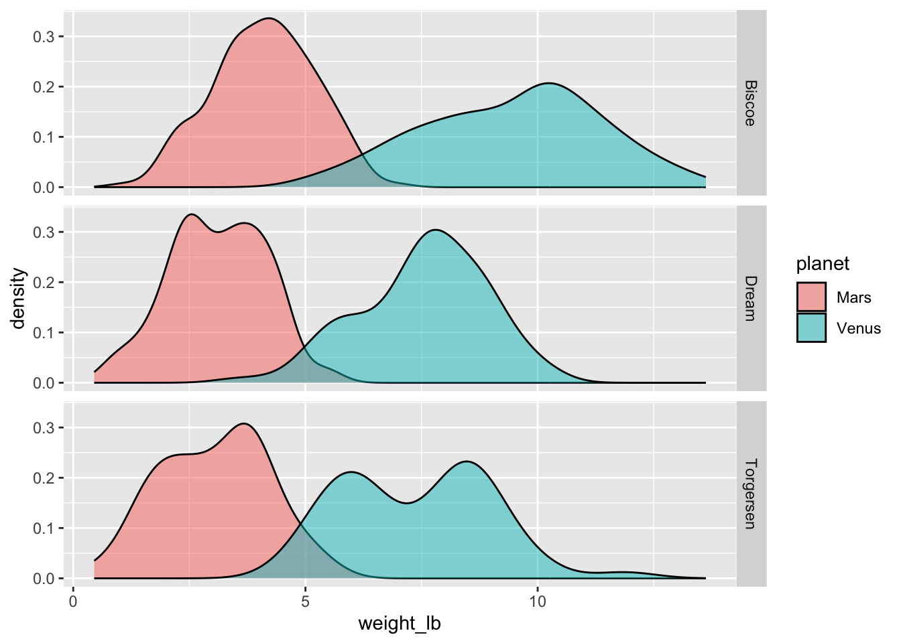
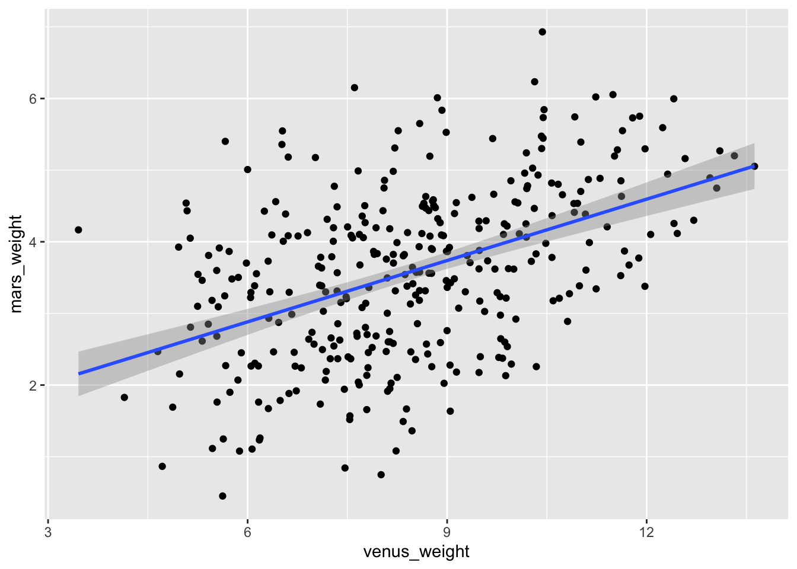
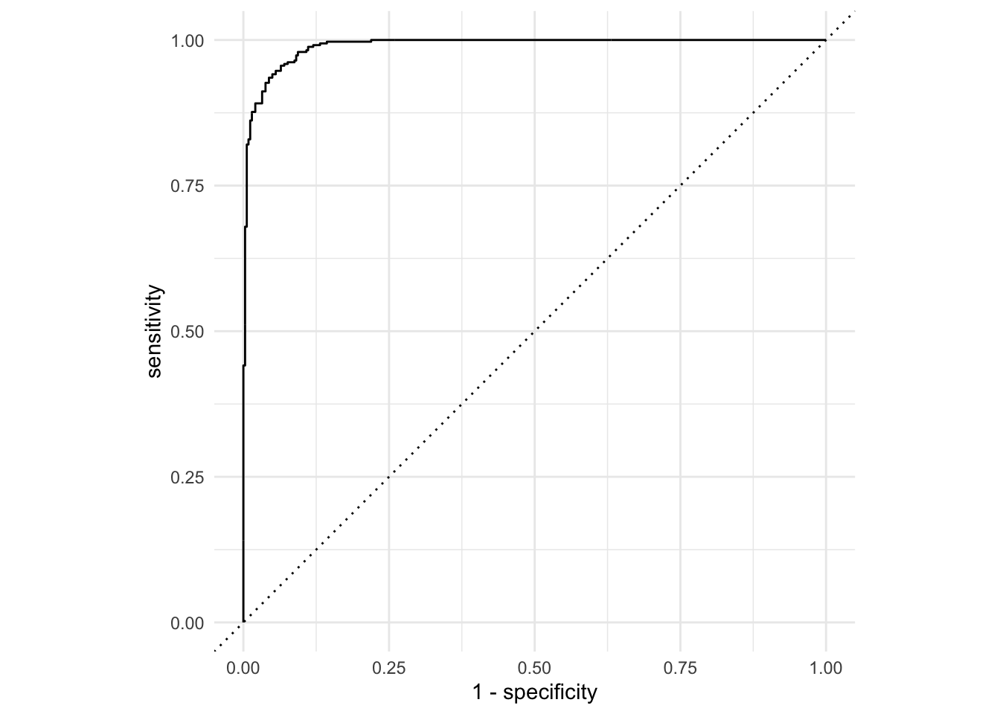
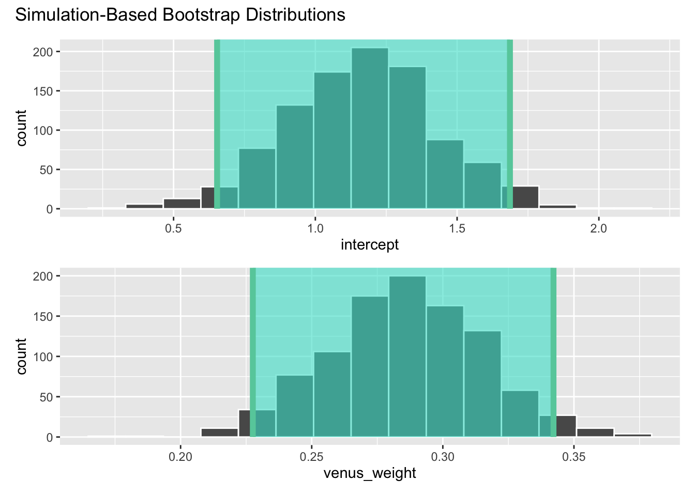
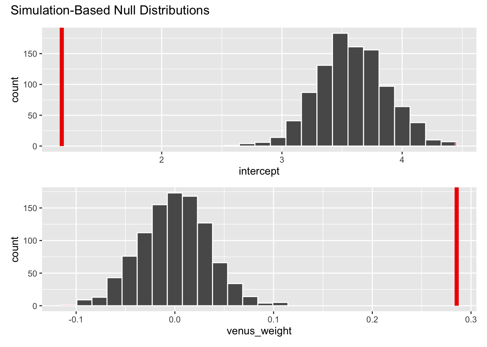
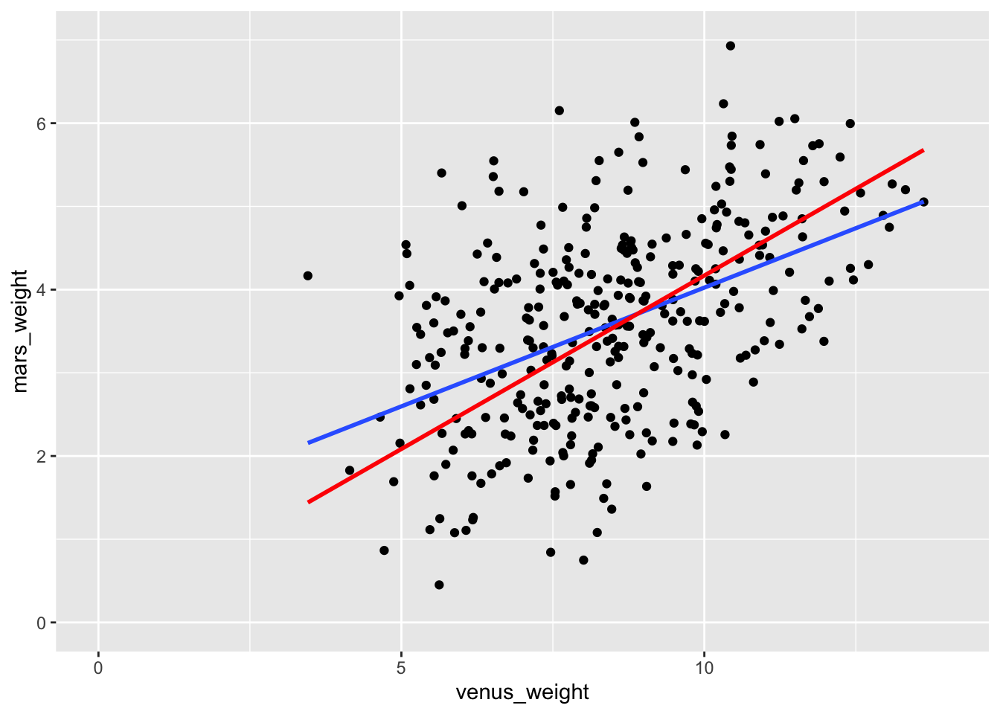
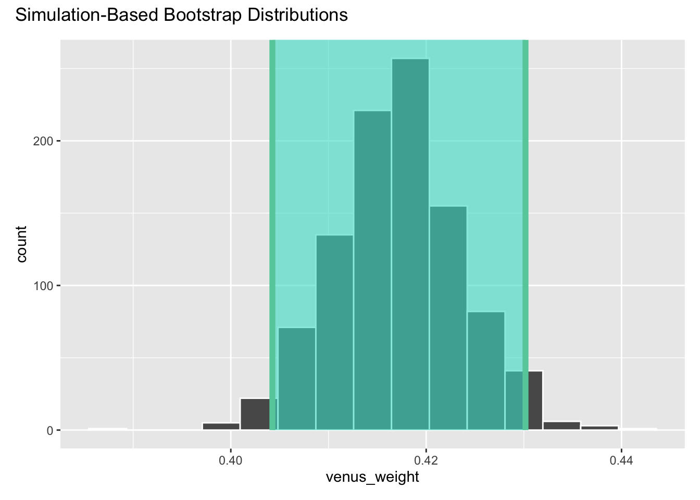

AE 20: A Dataset’s Life
Nope, it’s not A Hero’s Life, or A Boy’s Life, or A Nun’s Life; it’s A Dataset’s Life. Let’s take a data set through all four steps in our data science workflow:
- preparation: import, join, clean, reshape, mutate, etc;
- exploration: pictures (ABV!) and a concise set of numerical summaries;
- modeling: linear/logistic regression, model selection, etc;
- inference: interval estimation and hypothesis testing.
If you’re like me, you are sick of the penguins at this point. So for our last act, let’s banish them to worlds beyond. I packed all of those lil’ beasts onto a rocket ship and took them to both Mars and Venus, where I recorded their weights (in pounds). I then abandoned the ship to hurtle through space so that future stawanana students never have to study them again.
1. Preparation
Load the data
I have two sets of measurements for the same sample of penguins: one set taken on Mars, and another on Venus. They are contained in two separate files that need to be merged:
penguins_venus <- read_csv("data/penguins_venus.csv")
penguins_mars <- read_csv("data/penguins_mars.csv")
glimpse(penguins_venus)Rows: 344
Columns: 6
$ id <dbl> 1, 2, 3, 4, 5, 6, 7, 8, 9, 10, 11, 12, 13, 14, 15, 1…
$ species <chr> "Adelie", "Adelie", "Adelie", "Adelie", "Adelie", "A…
$ island <chr> "Torgersen", "Torgersen", "Torgersen", "Torgersen", …
$ sex <chr> "male", "female", "female", NA, "female", "male", "f…
$ flipper_length_mm <dbl> 181, 186, 195, NA, 193, 190, 181, 195, 193, 190, 186…
$ weight_lb <dbl> 8.356999, 7.347528, 6.165162, NA, 9.173660, 8.157105…glimpse(penguins_mars)Rows: 344
Columns: 2
$ id <dbl> 1, 2, 3, 4, 5, 6, 7, 8, 9, 10, 11, 12, 13, 14, 15, 16, 17, 1…
$ weight_lb <chr> "3.8219301852578837", "3.56777681688403", "1.761707536468984…Merge the data
Task: Use an appropriate join function to create a new data frame called space_penguins, where each penguin’s weight on either planet is recorded in a separate column:
space_penguins <- full_join(penguins_venus, penguins_mars, by = join_by(id)) |>
rename(venus_weight = weight_lb.x,
mars_weight = weight_lb.y)
space_penguins# A tibble: 344 × 7
id species island sex flipper_length_mm venus_weight mars_weight
<dbl> <chr> <chr> <chr> <dbl> <dbl> <chr>
1 1 Adelie Torgersen male 181 8.36 3.821930185257…
2 2 Adelie Torgersen female 186 7.35 3.567776816884…
3 3 Adelie Torgersen female 195 6.17 1.761707536468…
4 4 Adelie Torgersen <NA> NA NA <NA>
5 5 Adelie Torgersen female 193 9.17 3.073547356370…
6 6 Adelie Torgersen male 190 8.16 2.026601878680…
7 7 Adelie Torgersen female 181 8.58 3.318306212723…
8 8 Adelie Torgersen male 195 11.9 3.772687060633…
9 9 Adelie Torgersen <NA> 193 8.14 2.603709532256…
10 10 Adelie Torgersen <NA> 190 8.10 3.002844015041…
# ℹ 334 more rowsReshape the data
Task: Use an appropriate pivot function to create a new version of space_penguins where the information about the planet where the measurements were taken is its own column:
space_penguins_long <- space_penguins |>
pivot_longer(
cols = c(venus_weight, mars_weight),
names_to = "planet",
values_to = "weight_lb"
)Error in `pivot_longer()`:
! Can't combine `venus_weight` <double> and `mars_weight` <character>.Woops! Looks like we might have a problem here. Why is it saying that the Mars weights are type character?
# A tibble: 344 × 1
mars_weight
<chr>
1 this is why we can't have nice things
2 get wrecked
3 6.93005873361171
4 6.233851410442386
5 6.151607146997191
6 6.054400666505051
7 6.021791903417968
8 6.010224782201169
9 5.99589305540989
10 5.844409564530165
# ℹ 334 more rowsOh. That’s really stupid. If we tell it to convert this column to numbers, it will do it, and anything it cannot convert (such as those two pieces of text) will simply be replaced with NA, which is fine by me in this case:
space_penguins <- space_penguins |>
mutate(
mars_weight = as.numeric(mars_weight)
)
space_penguins# A tibble: 344 × 7
id species island sex flipper_length_mm venus_weight mars_weight
<dbl> <chr> <chr> <chr> <dbl> <dbl> <dbl>
1 1 Adelie Torgersen male 181 8.36 3.82
2 2 Adelie Torgersen female 186 7.35 3.57
3 3 Adelie Torgersen female 195 6.17 1.76
4 4 Adelie Torgersen <NA> NA NA NA
5 5 Adelie Torgersen female 193 9.17 3.07
6 6 Adelie Torgersen male 190 8.16 2.03
7 7 Adelie Torgersen female 181 8.58 3.32
8 8 Adelie Torgersen male 195 11.9 3.77
9 9 Adelie Torgersen <NA> 193 8.14 2.60
10 10 Adelie Torgersen <NA> 190 8.10 3.00
# ℹ 334 more rowsAlright, let’s try to reshape again:
space_penguins_long <- space_penguins |>
pivot_longer(
cols = c(venus_weight, mars_weight),
names_to = "planet",
values_to = "weight_lb"
) |>
mutate(
planet = if_else(planet == "venus_weight", "Venus", "Mars")
)
space_penguins_long# A tibble: 688 × 7
id species island sex flipper_length_mm planet weight_lb
<dbl> <chr> <chr> <chr> <dbl> <chr> <dbl>
1 1 Adelie Torgersen male 181 Venus 8.36
2 1 Adelie Torgersen male 181 Mars 3.82
3 2 Adelie Torgersen female 186 Venus 7.35
4 2 Adelie Torgersen female 186 Mars 3.57
5 3 Adelie Torgersen female 195 Venus 6.17
6 3 Adelie Torgersen female 195 Mars 1.76
7 4 Adelie Torgersen <NA> NA Venus NA
8 4 Adelie Torgersen <NA> NA Mars NA
9 5 Adelie Torgersen female 193 Venus 9.17
10 5 Adelie Torgersen female 193 Mars 3.07
# ℹ 678 more rowsSo, we have the wide view in space_penguins, where each row is a penguin, and we have the long view in space_penguins_long where each row is a penguin/planet. Which of these is “tidy”? As we will see, it depends on the task.
2. Exploration
Pictures
Task: Generate side-by-side density plots of the weights on each planet.
ggplot(space_penguins_long, aes(x = weight_lb, fill = planet)) +
geom_density(alpha = 0.5)
So, weights on Mars are systematically lower than weights on Venus.
If we wished to slice-and-dice the data further according to other categorical variables like sex or island, we could do it with one of those darned facet functions (I can never remember which is which or where the ~ goes):
ggplot(space_penguins_long, aes(x = weight_lb, fill = planet)) +
geom_density(alpha = 0.5) +
facet_grid(island ~ .)
A concise set of numerical summaries
Task: compute the mean, standard deviation, and median of weight on each planet:
space_penguins_long |>
group_by(planet) |>
summarize(
mean_wt = mean(weight_lb, na.rm = TRUE),
sd_wt = sd(weight_lb, na.rm = TRUE),
med_wt = median(weight_lb, na.rm = TRUE)
)# A tibble: 2 × 4
planet mean_wt sd_wt med_wt
<chr> <dbl> <dbl> <dbl>
1 Mars 3.58 1.19 3.62
2 Venus 8.46 1.94 8.36Notice that these numbers match what we saw in the plot. The distributions are symmetric, and so the means and medians are about the same. Furthermore, the spread of the Mars distribution was lower than the spread of the Venus distribution, and we see that in the numbers as well.
3. Modeling
What is the conversion factor between weights on Venus and weights on Mars? If you ask a physicist, I’m pretty sure they will tell you it’s this:
\[ Mars~weight~(lb)\approx Venus~weight~(lb)\times 0.41. \]
So, you weigh less on Mars than you do on Venus. Something something gravity. If we didn’t already know this, could we learn it from our data? Note that is is not a foregone conclusion, because our data are noisy. The weights have been measured with error, and so what should be a perfect straight line relationship won’t be, exactly.
Linear
Task: Create a scatterplot of Venus weights versus Mars weights, and add a line of best fit:
ggplot(space_penguins, aes(x = venus_weight, y = mars_weight)) +
geom_point() +
geom_smooth(method = "lm")
There has been some controversy about how to read a phrase like “Venus weights versus Mars weights.” I personally take it to mean that Venus weights go on the \(x\)-axis and Mars weights go on the \(y\)-axis, but some on the teaching team think I am psychotic for thinking this. Based on my informal polling of students, we all would seem to be evenly split on this point. Anyway, you’re not being tested on this, and on an exam I will try to be sufficiently clear so that it doesn’t end up mattering.
Task: Compute and interpret the estimated slope and intercept of the best fit line:
linear_fit <- linear_reg() |>
fit(mars_weight ~ venus_weight, data = space_penguins)
tidy(linear_fit)# A tibble: 2 × 5
term estimate std.error statistic p.value
<chr> <dbl> <dbl> <dbl> <dbl>
1 (Intercept) 1.17 0.256 4.57 6.80e- 6
2 venus_weight 0.285 0.0295 9.68 1.02e-19\[ \widehat{Mars~weight} = 1.17 + 0.28\times Venus~weight \]
Interpretations:
- intercept: if a penguin weighs zero pounds on Venus, we predict that, on average, they weigh 1.17 pounds on Mars. This obviously makes no sense;
- slope: a one pound increase on Venus predicts a 0.28 pounds increase on Mars, on average.
Hmmm. We know that the “true” relationship has an intercept of 0 and a slope of 0.41, so this is not so good.
What we’re witnessing here is attenuation bias.
Logistic
Task: fit a logistic regression that predicts the planet the measurement was made on from the value of the measurement. Lower measurements were probably more likely to have been taken on Mars, as we saw.
space_penguins_long <- space_penguins_long |>
mutate(planet = as_factor(planet))
levels(space_penguins_long$planet)[1] "Venus" "Mars" logistic_fit <- logistic_reg() |>
fit(planet ~ weight_lb, data = space_penguins_long)
tidy(logistic_fit)# A tibble: 2 × 5
term estimate std.error statistic p.value
<chr> <dbl> <dbl> <dbl> <dbl>
1 (Intercept) 14.4 1.51 9.53 1.50e-21
2 weight_lb -2.60 0.277 -9.39 5.86e-21\[ \log\left(\frac{\hat{p}}{1-\hat{p}}\right)=14.4-2.6\times weight \]
Interpretations:
- intercept: we predict a weight measurement of zero lb to have come from the planet Mars with an odds of \(e^{14.4}\approx 1794075\). Again, doesn’t make a tremendous amount of sense, but in general, the lower the weight, the more likely it was to have been recorded on Mars;
- slope: for each one pound increase in the measurement, we predict on average that the odds of the measurement coming from Mars decrease by a multiplicative factor of \(e^{-2.6}\approx 0.074\). That is precipitous!
Task: generate the ROC curve for this model:
log_aug <- augment(logistic_fit, space_penguins_long)
log_roc <- roc_curve(log_aug,
truth = planet,
.pred_Mars,
event_level = "second")
ggplot(log_roc, aes(x = 1 - specificity, y = sensitivity)) +
geom_path() +
geom_abline(lty = 3) +
coord_equal() +
theme_minimal()
So, given a measurement, it’s not too hard to predict what planet it was taken on. Our model does a pretty good job.
4. Inference
Back to linear regression now…
Interval estimation
Task: Compute, visualize, and interpret a 95% confidence interval for the slope of the regression line:
observed_fit <- space_penguins |>
specify(mars_weight ~ venus_weight) |>
fit()
set.seed(8675309)
boot_fits <- space_penguins |>
specify(mars_weight ~ venus_weight) |>
generate(reps = 1000, type = "bootstrap") |>
fit()
ci_95 <- get_confidence_interval(
boot_fits,
point_estimate = observed_fit,
level = 0.95,
type = "percentile"
)
ci_95# A tibble: 2 × 3
term lower_ci upper_ci
<chr> <dbl> <dbl>
1 intercept 0.654 1.69
2 venus_weight 0.228 0.342visualize(boot_fits) +
shade_confidence_interval(ci_95)
We are 95% confident that the true slope is between 0.228 and 0.342.
Hypothesis testing
Task: Test the following hypotheses at the 5% level:
\[ \begin{aligned} H_0&:\beta_1=0\\ H_A&:\beta_1\neq0 \end{aligned} \]
set.seed(20)
null_dist <- space_penguins |>
specify(mars_weight ~ venus_weight) |>
hypothesize(null = "independence") |>
generate(reps = 1000, type = "permute") |>
fit()
visualize(null_dist) +
shade_p_value(obs_stat = observed_fit, direction = "two-sided")
null_dist |>
get_p_value(obs_stat = observed_fit, direction = "two-sided")# A tibble: 2 × 2
term p_value
<chr> <dbl>
1 intercept 0
2 venus_weight 0The p-value is basically zero. This means that, in a world where the null hypothesis is true, and \(\beta_1\) does in fact equal zero, then there is a 0% chance that we would observe an estimated slope as or more extreme than the one we saw. This provides evidence that the null is totally bogus, and so we reject it.
Task: Test the following hypotheses at the 5% level:
\[ \begin{aligned} H_0&:\beta_1=0.41\\ H_A&:\beta_1\neq0.41 \end{aligned} \]
We haven’t exactly learned how to do this, but there’s a duality between confidence intervals and hypothesis testing. Determining how far the estimate is in the tails of the null distribution is the same as determining whether or not the hypothesized value is contained in a confidence interval. Our 95% confidence interval was (0.228, 0.342). This does not contain the hypothesized value of 0.41, meaning that the hypothesized value is not within the range of likely values. So we reject the null at the 5% level (because it was a 95% interval).
This is a setting where we sorta know the true value. Physicists are pretty sure the slope is 0.41, so it’s alarming that we just rejected that hypothesis. What’s a boy to do?
BONUS: regression through the origin
This is the (population) linear model we are estimating with data:
\[ Mars~weight = \beta_0+\beta_1\times Venus~weight + \varepsilon. \]
So we are allowing for the possibility that \(\beta_0\neq 0\) even though we know this is logically impossible. If the weight on Venus is zero, then the weight on Mars for the same subject must also be zero. Period.
If we wish to force the intercept to be zero to align with this logic, then we are using the regression-through-the-origin model:
\[ Mars~weight = \beta_1\times Venus~weight + \varepsilon. \]
We still estimate \(\beta_1\) using least squares, but now we’re getting the best fitting line that goes through the origin, as opposed to the best fitting line that could go anywhere.
This is how to fit this in R. That -1 syntax is like saying “remove the intercept.”
better_fit <- linear_reg() |>
fit(mars_weight ~ venus_weight - 1, data = space_penguins)
tidy(better_fit)# A tibble: 1 × 5
term estimate std.error statistic p.value
<chr> <dbl> <dbl> <dbl> <dbl>
1 venus_weight 0.417 0.00678 61.5 6.26e-186Hey good lookin’, what’s cookin’! That’s a number I like. So, when we use some domain knowledge to change the model and force it to better match how reality works, we get better results. Here’s how the previous line of best fit and the best-fit-through-the-origin line compare:
ggplot(space_penguins, aes(x = venus_weight, y = mars_weight)) +
geom_point() +
geom_smooth(method = "lm", se = FALSE) +
geom_smooth(method = "lm", se = FALSE, formula = y ~ x - 1, color = "red") +
xlim(0, 14) +
ylim(0, 7)
If we redo the confidence interval for the slope in this new model, the “true value” is comfortably inside:
observed_fit <- space_penguins |>
specify(mars_weight ~ venus_weight - 1) |>
fit()
set.seed(8675309)
boot_fits <- space_penguins |>
specify(mars_weight ~ venus_weight - 1) |>
generate(reps = 1000, type = "bootstrap") |>
fit()
ci_90 <- get_confidence_interval(
boot_fits,
point_estimate = observed_fit,
level = 0.95,
type = "percentile"
)
ci_90# A tibble: 1 × 3
term lower_ci upper_ci
<chr> <dbl> <dbl>
1 venus_weight 0.404 0.430visualize(boot_fits) +
shade_confidence_interval(ci_90)
Fab.